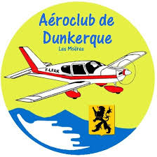
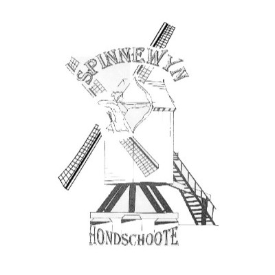

<mat-card>
  <div class="contenu">
    <div>
      
      <ul>
        <li>      
          <h2>Membre de l'aéroclub de Dunkerque / Les Moëres</h2>
        </li>
        <li>
          <h4>Pilote d'avion léger :</h4>
        </li>
        <p> Détenteur d'un LAPL (Light Aircraft Pilot License) </p>
        <br>
        <li>
          <h4>Bénévolat :</h4> 
          
        </li>
        <p>participation aux différents évènements et entretien du club 
          (portes ouvertes, repas, nettoyage des avions et entretien des infrastructures)</p>
      </ul>
    </div>
    <div>
      
      <ul>
        <li>      
          <h2>Plus de 10 ans de tir à l'arc</h2>
        </li>
        <li>
          <h4>Quadruple champion des Hauts-De-France en équipe en UNSS :</h4>
        </li>
        <p>Au collège en 2016/2017/2018 et au lycée en tant que tireur coach en 2021 en catégorie excellence</p>
        <br>
        <li>
          <h4>Champion du nord :</h4>          
        </li>
        <p>En 2018 catégorie homme minimes arc classique</p>
      </ul>
    </div>
  </div>
</mat-card>
